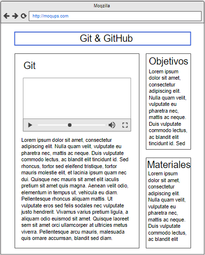

Git y GitHub
Objetivo del sitio
Diseñar un Ovi con la explicación de la instalación, funcionamiento y manejo para la plataforma de desarrollo Git y GitHub
Objetivos Específicos
- Explicar como descargar e instalar Git y Github
- Dar a conocer como crear una cuenta en git
- Explicar comandos de consola para el manejo de git
Materiales
Contenido
Bienvenidos al curso de Git y GitHub
Este OVA fue creada para fortalecer el conocimiento de los estudiantes del curso de
Diseño de Sitios Web, enfocado en el manejo de los aplicativos Git y GitHub
Instalación de Git
Antes de empezar a utilizar Git, tienes que instalarlo en tu computadora.
Incluso si ya está instalado, este es posiblemente un buen momento para actualizarlo a su última versión.
Puedes instalarlo como un paquete,
a partir de un archivo instalador o bajando el código fuente y compilándolo tú mismo.
Instalación en Linux
Si quieres instalar Git en Linux a través de un instalador binario,
en general puedes hacerlo mediante la herramienta básica de administración
de paquetes que trae tu distribución. Si estás en Fedora por ejemplo, puedes usar yum:
$ yum install git
Si estás en una distribución basada en Debian como Ubuntu, puedes usar apt-get:
$ apt-get install git
Para opciones adicionales, la página web de Git tiene instrucciones de instalación en diferentes tipos de Unix.
Puedes encontrar esta información en http://git-scm.com/download/linux.
Instalación en Mac
Hay varias maneras de instalar Git en un Mac. Probablemente la más sencilla es instalando las
herramientas Xcode de Línea de Comandos. En Mavericks (10.9 o superior) puedes hacer esto desde el
Terminal si intentas ejecutar git por primera vez. Si no lo tienes instalado, te preguntará si deseas
instalarlo.
Si deseas una versión más actualizada, puedes hacerlo a partir de un instalador binario.
Un instalador de Git para OSX es mantenido en la página web de Git.
Lo puedes descargar en http://git-scm.com/download/mac.
También puedes instalarlo como parte del instalador de Github para Mac.
Su interfaz gráfica de usuario tiene la opción de instalar las herramientas de línea de comandos.
Puedes descargar esa herramienta desde el sitio web de Github para Mac en http://mac.github.com.
Instalación en Windows
También hay varias maneras de instalar Git en Windows. La forma más oficial está disponible para ser
descargada en el sitio web de Git. Solo tienes que visitar http://git-scm.com/download/win y la descarga
empezará automáticamente. Fíjate que éste es un proyecto conocido como Git para Windows (también llamado
msysGit), el cual es diferente de Git. Para más información acerca de este proyecto visita
http://msysgit.github.io/.
Otra forma de obtener Git fácilmente es mediante la instalación de GitHub para Windows.
El instalador incluye la versión de línea de comandos y la interfaz de usuario de Git.
Además funciona bien con Powershell y establece correctamente "caching" de credenciales y
configuración CRLF adecuada. Aprenderemos acerca de todas estas cosas un poco más adelante,
pero por ahora es suficiente mencionar que éstas son cosas que deseas. Puedes descargar
este instalador del sitio web de GitHub para Windows en http://windows.github.com.
Instalación a partir del Código Fuente
Algunas personas desean instalar Git a partir de su código fuente debido a que obtendrán una versión
más reciente. Los instaladores binarios tienden a estar un poco atrasados. Sin embargo, esto ha hecho
muy poca diferencia a medida que Git ha madurado en los últimos años.
Para instalar Git desde el código fuente necesitas tener las siguientes librerías de las que Git depende:
curl, zlib, openssl, expat y libiconv. Por ejemplo, si estás en un sistema que tiene yum (como Fedora) o
apt-get (como un sistema basado en Debian), puedes usar estos comandos para instalar todas las
dependencias:
$ yum install curl-devel expat-devel gettext-devel \
openssl-devel zlib-devel
$ apt-get install libcurl4-gnutls-dev libexpat1-dev gettext \
libz-dev libssl-dev
Cuando tengas todas las dependencias necesarias, puedes descargar la versión más reciente de Git
en diferentes sitios. Puedes obtenerla a partir del sitio Kernel.org en
https://www.kernel.org/pub/software/scm/git , o su "mirror" en el sitio
web de GitHub en https://github.com/git/git/releases. Generalmente la más reciente
versión en la página web de GitHub es un poco mejor, pero la página de kernel.org
también tiene ediciones con firma en caso de que desees verificar tu descarga.
Luego tienes que compilar e instalar de la siguiente manera:
$ tar -zxf git-2.0.0.tar.gz
$ cd git-2.0.0
$ make configure
$ ./configure --prefix=/usr
$ make all doc info
$ sudo make install install-doc install-html install-info
Una vez hecho esto, también puedes obtener Git, a través del propio Git, para futuras actualizaciones:
$ git clone git://git.kernel.org/pub/scm/git/git.git
GIT. (21 de Septiembre de 2020). Git - Book. Recuperado de https://git-scm.com/book/es/v2
Maquetación
